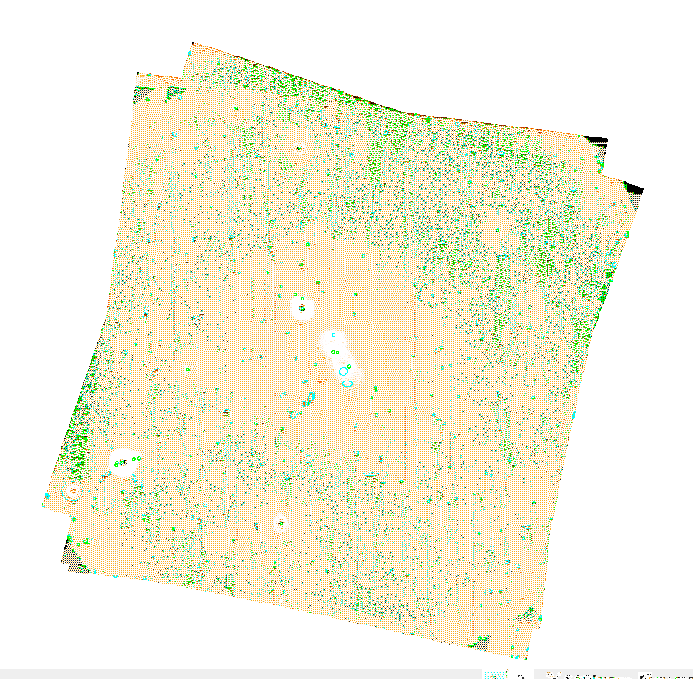
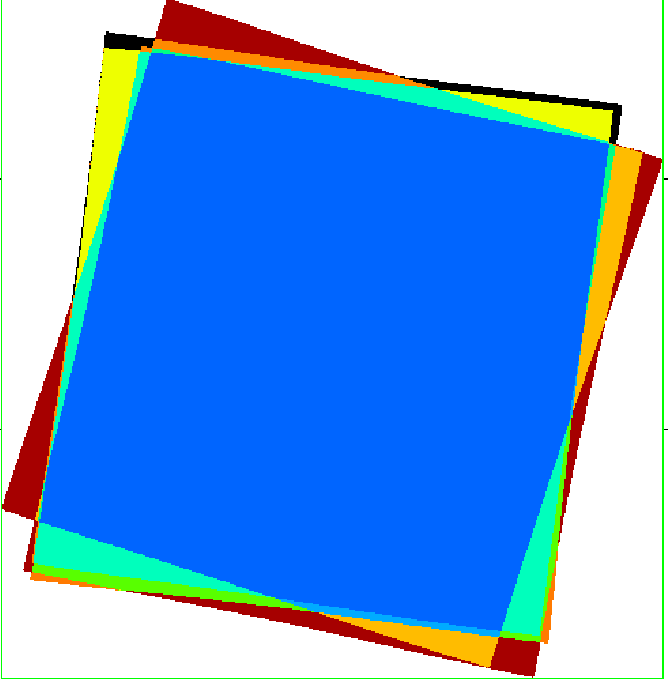
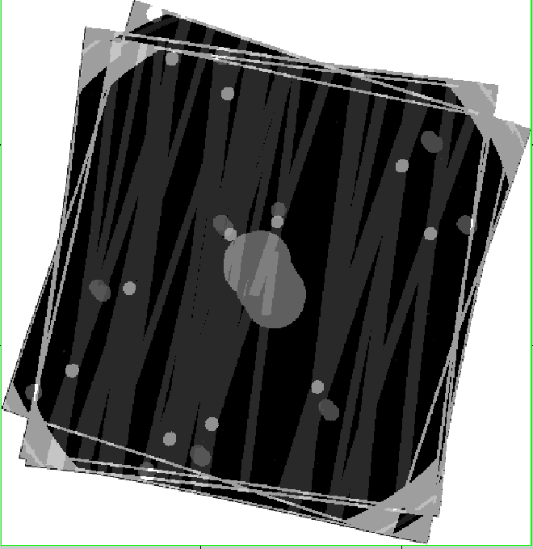

Figure 1 shows the image from the stacking of each of the V-band full-frame sky images from 4 SA-95 observations. The command-line to produce the image was,
ommosaic imagesets=''P0134921001OMS001FSIMAGV000.FIT P0134921101OMS001FSIMAGV000.FIT P0154150201OMS001FSIMAGV000.FIT P0410780201OMS008FSIMAGV000.FIT" mosaicedset=testimage.fits mincorr=0''. Setting mincorr to 0.0 resulted in the images being stacked without being aligned. Omdetect was also run on the image, and the detected source-regions are shown overlaid on the image.
|  |
A careful inspection of the image shows the following features
Figure 2 shows the stacked exposure image. The central region has an exposure about 5 times greater than that of a single image.
|  |
Figure 3 shows the stacked quality image. The central-enhancement regions (large circles near the centre), read-out streaks, bright-sources and edges are clearly seen.
|  |